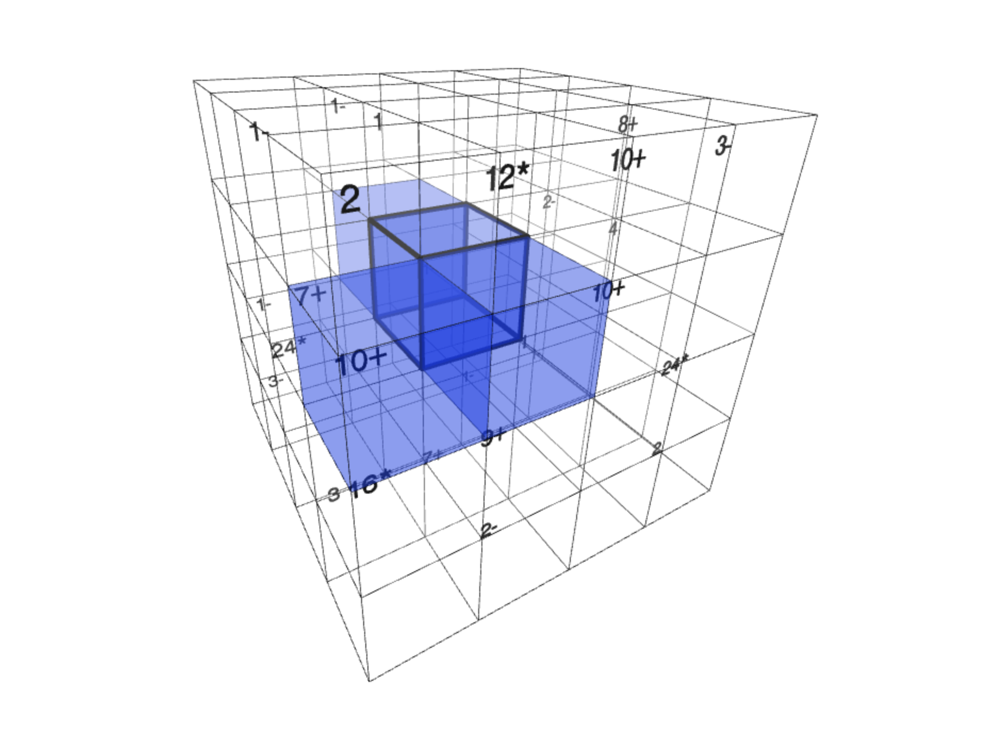

100s of DAUs
I built this in 2 days and immediately had many puzzle-inclined friends latch onto the game. It's classic Kenken, but in 3D! Nobody has solved a 5x5x5 to date, so maybe YOU can be the first!

September 2020 - Present
United Nations AI for Good Summit 2023
Business Intelligence Group AI Excellence Award
WO2023220205A1: Systems and methods for in-silico biopanning
WO2022246284A2: Systems for end-to-end optimization of precision fermentation-produced animal proteins in food applications
WO2022246224A1: Systems and methods for algorithmically estimating protein concentrations
WO2022182799A1: Compositions for preparing animal-free egg-like products
May 2021 - August 2021
AI Integrity: Few-shot neural architecture search
March 2020 - September 2020
Taught 10,000 students when COVID-19 shut down schools

September 2017 - May 2022
Statistics and Machine Learning, Molecular Biology, Music

stuff i can do
Writing down technical skills never sat well with me because it feels restricting. Most importantly, I am the most voracious, curious, and competitive learner that I know. While I have a degree in CS, I taught myself ML as an intern and filed my first patent for EVERY in one month. Another example: in two weeks I wrote an RL policy to design a healthier but functionally equivalent soy legumoglobin A, built a GPT-3 based mental health disorder classifier, and composed a big band score, with no prior experience in these fields.
NextJS, ReactJS, Tailwind, HTML/CSS/JS/TS (EVERY stack was vanilla)
FastAPI, Flask, Postgres, ElasticSearch
Python, NodeJS, Java
PyTorch, MLX, learning CUDA
GCP, Travis CI, Git